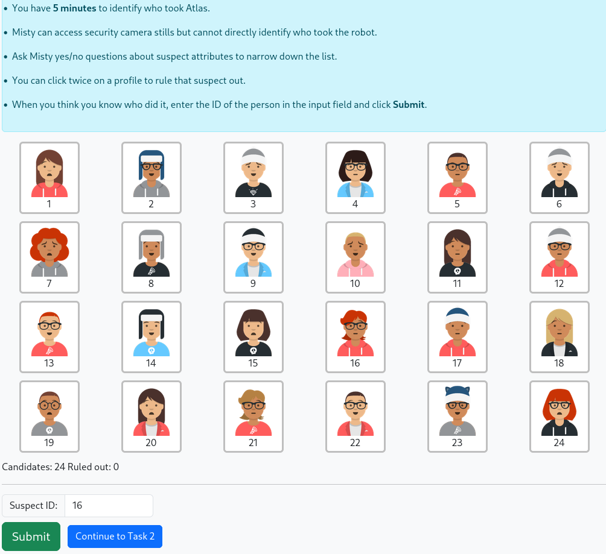
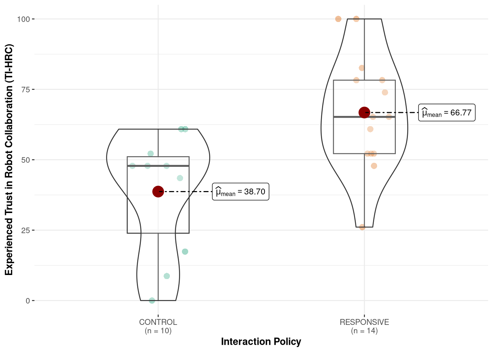
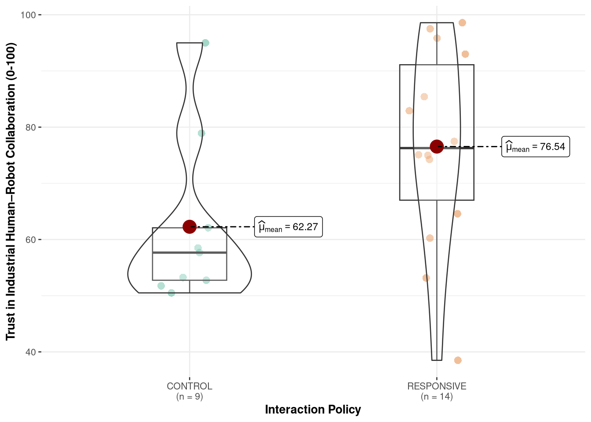
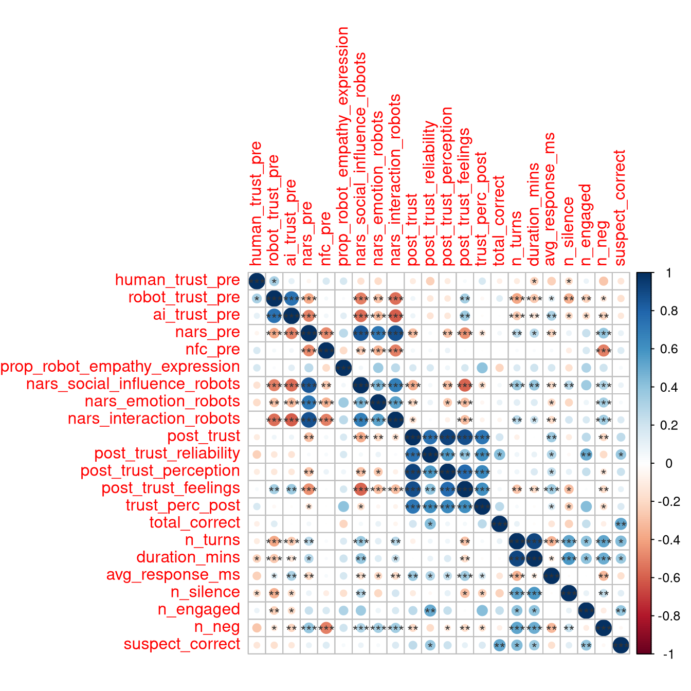

| Characteristic | N | CONTROL N = 131 |
RESPONSIVE N = 161 |
p-value2 |
|---|---|---|---|---|
| Gender | 27 | 0.84 | ||
| Woman | 6 / 13 (46%) | 7 / 14 (50%) | ||
| Man | 7 / 13 (54%) | 7 / 14 (50%) | ||
| Age Group | 27 | 0.35 | ||
| 18-24 | 5 / 13 (38%) | 7 / 14 (50%) | ||
| 25-34 | 4 / 13 (31%) | 2 / 14 (14%) | ||
| 34-44 | 1 / 13 (7.7%) | 4 / 14 (29%) | ||
| 45+ | 3 / 13 (23%) | 1 / 14 (7.1%) | ||
| Program | 25 | >0.99 | ||
| Psychology | 1 / 13 (7.7%) | 1 / 12 (8.3%) | ||
| Engineering | 2 / 13 (15%) | 1 / 12 (8.3%) | ||
| Computer Science | 7 / 13 (54%) | 6 / 12 (50%) | ||
| Earth Sciences | 0 / 13 (0%) | 1 / 12 (8.3%) | ||
| Other | 3 / 13 (23%) | 3 / 12 (25%) | ||
| Experience w/Robots | 29 | 7 / 13 (54%) | 4 / 16 (25%) | 0.14 |
| Native English Speaker | 29 | 0.53 | ||
| Native English | 5 / 13 (38%) | 8 / 16 (50%) | ||
| Non-Native English | 8 / 13 (62%) | 8 / 16 (50%) | ||
| NARS Overall | 29 | 38 (8) | 38 (7) | 0.79 |
| Need for Cognition | 29 | 3.62 (0.78) | 3.74 (0.74) | 0.55 |
| Dialogue Viability | 29 | 0.63 | ||
| exclude | 3 / 13 (23%) | 2 / 16 (13%) | ||
| include | 10 / 13 (77%) | 14 / 16 (88%) | ||
| 1 n / N (%); Mean (SD) | ||||
| 2 Pearson’s Chi-squared test; Fisher’s exact test; Wilcoxon rank sum test | ||||
Responsive Robotics to Increase Trust in Autonomous Human–Robot Interaction
Abstract
This study implements a multi-stage collaborative task system where participants collaborate with the Misty-II social robot to solve a who-dunnit type task. The system utilizes an autonomous, mixed-initiative dialogue architecture with affect-responsive capabilities.
1 Introduction
As automation expands across safety-critical domains such as manufacturing, mining, and healthcare, robotic systems are increasingly expected to operate alongside humans rather than in isolation [1], [2], [3], [4]. In these collaborative settings, successful deployment depends not only on technical performance and safety guarantees, but on whether human users are willing to rely on, communicate with, and coordinate their actions around systems driven by artificial intelligence (AI) [5], [6]. Trust has therefore emerged as a central determinant of adoption and effective use in human–robot collaboration (HRC) [5], [7]. Insufficient trust can lead to disuse or rejection of automation, while excessive trust risks overreliance—particularly in environments characterized by uncertainty or incomplete information [8].
A substantial body of human–robot interaction (HRI) research has examined how robot behaviour shapes user trust, perceived reliability, and cooperation across industrial and social contexts [9], [10]. Trust is commonly conceptualized as a multidimensional construct encompassing cognitive evaluations of competence and reliability, affective responses to the interaction partner, and behavioural willingness to rely on the system under conditions of risk or uncertainty [8], [11], [12]. Despite this multidimensional framing, empirical studies have predominantly operationalized trust using post-interaction self-report questionnaires, often collected following short, highly controlled interactions.
Importantly, much of the existing HRI trust literature relies on scripted behaviours, simulated environments, or Wizard-of-Oz paradigms in which a human operator covertly manages the robot’s behaviour. While these approaches are valuable for isolating specific design factors, they obscure the interaction breakdowns and system imperfections that characterize real-world autonomous robots [5]. In deployed systems, limitations such as speech recognition errors, delayed responses, misinterpretations of user intent, and incomplete affect sensing are not peripheral issues but defining features of interaction. These failures are likely to play a decisive role in shaping trust and collaboration, yet remain underrepresented in empirical evaluations.
One proposed mechanism for supporting trust in HRI is responsiveness: the extent to which a robot adapts its behaviour based on user state and interaction context [9], [10]. Responsive robots may adjust dialogue, timing, or support strategies in response to inferred cues such as confusion, frustration, or disengagement, and prior work suggests that such adaptive behaviour can enhance perceived social intelligence and trustworthiness in dialogue-driven tasks [13]. However, most evidence for these effects comes from simulated or semi-autonomous systems, leaving open questions about how responsiveness operates when implemented in fully autonomous, in-person interactions subject to real-time constraints and failure [5].
From an engineering perspective, responsiveness represents an interaction policy rather than a superficial social cue [9]. Proactive assistance based on interaction context differs fundamentally from reactive, request-based behaviour, particularly in fully autonomous systems—for example, offering clarification or encouragement when confusion or hesitation is inferred, rather than waiting for an explicit request for help [13]. Implementing such policies requires robots to manage spoken-language dialogue, track interaction state over time, and coordinate verbal and nonverbal responses in real time, all while operating under noise, latency, and sensing uncertainty [5].
The present work addresses these gaps through a pilot study examining trust and collaboration during in-person interaction with a fully autonomous social robot. Participants collaborated with one of two versions of the same robot platform during a dialogue-driven puzzle task requiring shared problem solving. In both conditions, all interaction management—including speech recognition, dialogue state tracking, task progression, and response generation—was handled and logged autonomously by the robot without human intervention. In the responsive condition, the robot employed a proactive interaction policy, adapting its assistance based on conversational cues and inferred user affect. In the neutral condition, the robot followed a reactive policy, providing general guidance but assistance only when explicitly requested.
This pilot study had three primary objectives: (1) to design and evaluate the feasibility of an autonomous spoken-language interaction system with affect-responsive behaviour on a mobile robot platform; (2) to assess whether interaction policy influences post-interaction trust and collaborative experience under realistic autonomous conditions; and (3) to explore how behavioural and interaction-level indicators align with subjective trust evaluations. Rather than optimizing for flawless interaction, the system was intentionally designed to reflect the capabilities and limitations of contemporary social robots, allowing interaction breakdowns to surface naturally.
By combining post-interaction trust measures with task-level and behavioural observations, this study aims to contribute empirical evidence on how trust in human–robot collaboration emerges and is enacted during fully autonomous interaction. The findings are intended to inform the design of a larger subsequent study by evaluating feasibility and identifying technical, interactional, and methodological challenges that must be addressed when evaluating affect-responsive robots in real-world contexts.
2 Methods
This study employed a between-subjects experimental design to examine how robot interaction policy influences trust and collaboration during fully autonomous, in-person human–robot interaction. The sole experimental factor was the robot’s interaction policy, with participants randomly assigned to interact with either a responsive or neutral version of the same robot system.
Important
Throughout this paper, references to “the robot” denote the fully autonomous interactive system comprising the Misty-II hardware platform and its onboard software stack, with all interaction decisions generated without human intervention, including spoken-language processing, dialogue management, and the interaction policy governing verbal and nonverbal behaviour. Additional details of the system architecture are provided in Appendix A.
2.1 Interaction Policies
In the responsive policy condition, the robot employed a proactive, affect-adaptive interaction policy. Robot responses were modulated based on inferred participant affect, dialogue context, and task demands, resulting in unsolicited encouragement, clarification, and engagement-oriented behaviours when appropriate. For example, if the participant exhibited signs of confusion or hesitation (e.g., long pauses, requests for repetition or detected irritation), the robot would proactively offer hints or rephrase instructions. Similarly, if the participant demonstrated engagement (e.g., rapid responses, affirmative feedback), the robot would reciprocate with positive reinforcement and increased task involvement.
In the neutral or control policy condition, the robot employed a neutral, reactive interaction policy. General information and guidance were were provided to move the participant through the tasks, but additional help was only provided when explicitly requested by the participant and without affect-based adaptation or proactive support beyond a check-in when participant was silent for more than 1 minute. For example, if the participant appeared confused but did not request assistance, the robot would not intervene. The robot’s verbal and nonverbal behaviours were designed to be neutral and non-engaging, avoiding unsolicited encouragement or affective responses.
Both conditions used identical hardware, software infrastructure, sensing capabilities, and task logic.
2.2 Collaborative Task Design
The task structure was designed to elicit collaboration under two distinct dependency conditions: (1) enforced collaboration, where the robot was required to complete the task, and (2) optional collaboration, where participants could choose whether to engage the robot. To this end, participants completed an immersive, narrative-driven puzzle game consisting of five sequential stages and two timed reasoning tasks. The game context positioned participants as investigators searching for a missing robot colleague, with the robot serving as a diegetic guide and collaborative partner. The overall interaction lasted approximately 25 minutes.
The interactions with the Misty-II social robot took place in a shared physical workspace that included a participant-facing computer interface [14]. The interface was used to display task materials, collect participant inputs, and manage task progression (see Figure 2). Importantly, the interface did not function as a control mechanism for the robot. Instead, the robot could autonomously monitor task progression and participant inputs via the interface and managed dialogue and behaviour accordingly.

Stage Overview
- Greeting: The robot introduced itself and engaged in brief rapport-building dialogue.
- Mission Brief: The robot explained the narrative context and overall objectives.
- Task 1: Robot-dependent collaborative reasoning task.
- Task 2: Open-ended problem solving with optional robot support.
- Wrap-up: The robot provided closing feedback and concluded the interaction.
Participants advanced between stages using the interface, either at the robot’s prompting or at their own discretion. All spoken dialogue and interaction events were handled by the robot and logged automatically.
Task 1: Robot-Dependent Collaborative Reasoning
In the first task, participants were asked to identify a perpetrator from a 6 × 4 grid of 24 ‘suspects’ by asking the robot a series of yes/no questions about the suspect’s features (e.g., “was the suspect wearing a hat?”). The grid was displayed on the interface, while questions were posed verbally.

The robot possessed ground-truth information necessary to answer each question correctly. Successful task completion was therefore dependent on interaction with the robot, creating a forced collaborative dynamic. Participants were required to coordinate questioning strategies with the robot to narrow down the suspect within a five-minute time limit. The structured nature of the task ensured consistent interaction demands across participants and conditions.
Task 2: Open-Ended Collaborative Problem Solving
The second task involved a more open-ended reasoning challenge. Participants were presented with multiple technical logs through a simulated terminal interface that could be used to infer the location of the missing robot.

Unlike Task 1, the robot did not have access to ground-truth information or the contents of the logs. The robot’s assistance was limited to general reasoning support derived from its language model, such as explaining how to interpret log formats, suggesting problem-solving strategies, or prompting participants to reflect on inconsistencies.
Participants could complete this task independently or solicit assistance from the robot at their discretion [15]. This design allowed collaboration to emerge voluntarily rather than being enforced by task structure, positioning the robot as a collaborative partner rather than an authoritative source.
2.3 Study Protocol
Participants signed up for the study and completed a pre-session questionnaire before their in-person session via Qualtrics. The pre-session questionnaire colleced basic demographics information and assessed baseline characteristics, including the Negative Attitudes Toward Robots Scale (NARS) and the short form of the Need for Cognition scale (NFC-s). These measures were used to capture individual differences that may moderate responses to robot interaction.
In-person sessions were conducted in a quiet, private room at Laurentian University between November and December 2025. Prior to each session, the robot’s interaction policy was configured to the assigned experimental condition.
Upon arrival, participants were greeted by the researcher, provided with a brief overview of the session, and given instructions for effective communication with the robot, including waiting for a visual indicator before speaking. Once participants indicated readiness, the researcher exited the room, leaving the participant and robot to complete the interaction without human presence or observation. Participants initiated the interaction by clicking a start button on the interface and were informed that they could terminate the session at any time without penalty.
Following task completion, participants completed a 21-item post-interaction questionnaire assessing trust. Participants then engaged in a brief debrief with the researcher and were awarded a $15 gift card. Total session duration averaged approximately 30 minutes.
2.4 Measures
A combination of self-report and objective measures was used to assess trust, engagement, and task performance.
2.4.1 Self-Report Measures
Participants completed a pre-session questionnaire assessing baseline characteristics, including the Negative Attitudes Toward Robots Scale (NARS) and the short form of the Need for Cognition scale (NFC-s). These measures were used to capture individual differences that may moderate responses to robot interaction.
Trust was assessed using two established self-report instruments commonly used in human–robot interaction research: the Trust Perception Scale–HRI (TPS-HRI) and the Trust in Industrial Human–Robot Collaboration scale (TI-HRC) [16], [17]. Both measures were adapted to reflect the specific task context and interaction modality of the present study. 9 items were retained from the TI-HRC and 12 items from the TPS-HRI. Item wording was modified to reference the robot’s behaviour during a dialogue-driven collaborative task, and response formats were adjusted to ensure interpretability for participants without prior robotics experience (see Appendix B for a full item list).
Together, these instruments capture complementary dimensions of trust, including perceived reliability, task competence, and affective comfort. However, they differ in their conceptual emphasis: the TPS-HRI primarily operationalizes trust as a reflective judgement of system performance (i.e., “What percent of the time was the robot reliable”), whereas the TI-HRC scale emphasizes trust as an experienced, embodied response arising during interaction (i.e., “The way the robot moved made me feel uneasy”). Despite this complementarity, both measures rely on retrospective self-report and may be insensitive to moment-to-moment trust dynamics as collaboration unfolds. For this reason, questionnaire data were interpreted alongside behavioural and interaction-level measures.
2.4.2 Objective Measures
Objective task metrics included task completion, task accuracy, time to completion, and the number of assistance requests made to the robot. behavioural engagement metrics were derived from interaction logs and manually coded dialogue transcripts, including number of dialogue turns, frequency of communication breakdowns, response timing, and task-relevant robot contributions.
2.5 Participants
A total of 29 participants were recruited from the Laurentian University community via word of mouth and the SONA recruitment system. Eligibility criteria required being 18 years or older, fluent in spoken and written English, and having normal or corrected-to-normal hearing and vision. Participants received a $15 gift card as compensation for their time; some students additionally received partial credit for participating depending on their program of study. All procedures were approved by the Laurentian University Research Ethics Board (REB #6021966).
Although English fluency was an eligibility requirement, in-person observation during data collection indicated meaningful variability in participants’ functional spoken-language proficiency. The researcher therefore recorded observed English proficiency for each session in anticipation of potential speech-based system limitations. Subsequent post-hoc review of interaction transcripts and system logs revealed that a subset of sessions exhibited severe and sustained communication failure. In these cases, automatic speech recognition (ASR) output was largely unintelligible or fragmented, preventing the robot from extracting sufficient linguistic content to maintain dialogue, respond meaningfully to participant queries, or support task progression. Interaction frequently stalled, participant input went unanswered or was misinterpreted, and collaborative problem-solving was not feasible. These sessions reflected a breakdown of language-mediated interaction, rendering the experimental manipulation inoperative.
Because the study relied fundamentally on spoken-language collaboration, sessions exhibiting persistent communication failure were classified as protocol non-adherence and excluded from task-level analyses (n = 5). Exclusion decisions were based solely on communication viability and interaction mechanics, not on task outcomes or trust measures.
2.5.1 Randomization Check
Across analyses, participants in the responsive and control conditions were comparable with respect to demographic characteristics, prior experience with robots, and baseline attitudes toward robots, including Negative Attitudes Toward Robots (NARS) and Need for Cognition scores (see Table 1) [18]. These patterns were consistent across both eligible and full samples, indicating successful random assignment.
2.6 Analytic Strategy
To ensure transparency and assess the impact of communication-based exclusions, analyses were conducted in three stages. First, an eligible-sample analysis (excluding non-viable sessions) served as the primary analysis, reflecting interactions in which the spoken-language protocol and experimental manipulation operated as intended. Second, a full-sample analysis including all participants was conducted as a sensitivity analysis to evaluate robustness to communication failures and protocol deviations. Third, a mechanism-focused analysis compared included and excluded sessions on interaction-process metrics (e.g., ASR failure rates, dialogue turn completion, task abandonment) to characterize how severe communication breakdown alters interaction dynamics.
While full-sample analyses are informative as robustness checks, trust measures obtained from sessions with complete communication breakdown were not interpreted as valid estimates of human–robot trust under functional interaction. In these cases, the robot was unable to sustain dialogue or collaborative behaviour, precluding meaningful evaluation of reliability, competence, or collaborative intent.
All analyses was conducted using R (version 4.5.1) within the Quarto framework. Data manipulation and visualization utilized the tidyverse suite of packages wickham2019?, with mixed-effects models fitted using the lme4 and lmerTest packages bates2015?, kuznetsova2017? while bayesian hierarchical models fitted using the brms package. Summary tables were generated using the gtsummary package sjoberg2021?. All code used for data processing and analysis is available at: GitHub Repository
3 Results
Prior to hypothesis testing, interaction sessions were classified based on communication viability using a dialogue-level metric derived from manual coding of system logs. Specifically, the proportion of dialogue turns affected by speech-recognition failure or fragmented utterances was computed for each session. Sessions in which more than 60% of dialogue turns-considering half of all turns were dependent on human speech-were characterized by communication breakdown and were classified as non-viable (\(n=5\)). This criterion closely matched sessions independently flagged during administration and reflects cases in which sustained spoken-language interaction was not possible. Of the 29 completed sessions, 5 were classified as non-viable due to severe and persistent communication failure resulting in unintelligble sentence fragments.
Because the experimental manipulation relied on language-mediated collaboration, analyses were conducted using three complementary approaches: (1) a primary eligible-sample analysis excluding non-viable sessions, (2) a full-sample sensitivity analysis including all sessions, and (3) a mechanism-focused analysis examining how communication breakdown altered interaction dynamics.
3.1 Primary Analysis: Eligible Sample
Descriptive comparisons of post-interaction trust measures indicated higher trust ratings in the responsive condition relative to the control condition across both trust scales (see Table 2 for more detail). As indicated in Figure 4, average post-interaction scores on the TI-HRC differed by approximately 26 points (Likert 1-5 converted to 0-100 scale for easier comparison across scales). While differences in TPS-HRI scores were approximately 15 points higher in the responsive condition compared to the control as indicated in Figure 5. Scores on the Behavioural summaries further indicated differences in dialogue patterns and robot assistance behaviours consistent with the intended interaction policies. TO DO: ADD DIALOGUE ANALYSES STATS

Importantly objective task accuracy did not differ between conditions across any task-level measures. This suggests that observed differences in trust were not driven by differential task success.
Despite similar task accuracy, interactions in the responsive condition were expectedly characterized by longer durations (more dialogue), slower robot response times (more dialogue), and a higher number of AI-detected engaged responses. These findings suggest that responsiveness altered the interaction dynamics and affective tone rather than task outcomes.

| Characteristic | CONTROL N = 101 |
RESPONSIVE N = 141 |
p-value2 |
|---|---|---|---|
| Trust in Industrial HRI Collaboration | 39 (22) | 67 (21) | 0.004 |
| Subscales | |||
| Reliability subscale | 40 (24) | 65 (18) | 0.012 |
| Trust Perception subscale | 42 (23) | 60 (22) | 0.075 |
| Affective Trust subscale | 50 (31) | 79 (22) | 0.018 |
| Trust Perception Scale–HRI | 59 (17) | 77 (18) | 0.022 |
| Overall Task Accuracy | 0.60 (0.21) | 0.66 (0.23) | 0.47 |
| Objective Measures | |||
| Dialogue Turns | 34 (9) | 33 (5) | 0.45 |
| Avg Session Duration (mins) | 13.24 (3.06) | 15.26 (2.12) | 0.084 |
| Avg Robot Response Time (ms) | 14.37 (3.76) | 17.24 (2.52) | <0.001 |
| Silent Periods | 5.60 (1.96) | 4.71 (2.05) | 0.29 |
| Engaged Responses | 2.00 (2.21) | 3.50 (1.95) | 0.040 |
| Frustrated Responses | 0.60 (0.70) | 0.93 (1.21) | 0.68 |
| 1 Mean (SD) | |||
| 2 Wilcoxon rank sum test; Wilcoxon rank sum exact test | |||
3.2 Hierarchical Models
To evaluate interaction policy effects and to control for pre-test covariates on post-interaction trust, linear and bayesian mixed-effects models were fitted separately for both trust outcomes. All models included interaction policy (RESPONSIVE vs. CONTROL) as the primary fixed effect, along with baseline negative attitudes toward robots (NARS) and native English fluency as baseline covariates unless otherwise noted. Random intercepts for session and items were included in all models to account for repeated measurement at the participant level. Model building proceeded by comparing a baseline model containing interaction policy alone against models incorporating theoretically motivated covariates. Adding NARS scores significantly improved model fit (χ² = 4.82, p = .028), whereas prior experience with robots did not. While Native English fluency did not significantly improve model fit it was retained as a covariate due to its relevance for spoken-language interaction viability with the ASR system. The final model structure: robot_trust_post ~ policy + nars_pre_c + native_english + (1 | session_id) + (1 | trust_items)
3.2.1 Trust in Industrial Human–Robot Collaboration
For this outcome, inclusion of random intercepts for individual trust items significantly improved model fit, indicating meaningful item-level variability beyond session-level differences.
In the final model predicting Trust in Industrial Human–Robot Collaboration, participants who interacted with the responsive robot reported significantly higher post-interaction trust than those in the control condition (\(β = 16.28, SE = 5.14, t = 3.17, p = .005\)). Higher baseline negative attitudes toward robots were associated with lower trust scores (\(β = −7.43, SE = 2.81, p = .016\)). Native English fluency was not significantly associated with trust, although the estimated effect was negative.
Trust Perception Scale–HRI
For the Trust Perception Scale–HRI, a comparable mixed-effects model was fitted using the same fixed effects structure. In this model, interaction with the responsive robot was associated with higher post-interaction trust scores (\(β = 14.17, SE = 6.5, t = 2.00, p = 0.046\)). Effects of baseline negative attitudes toward robots and native English fluency followed a similar directional pattern but did not reliably differ from zero.
In contrast to the collaboration trust scale, inclusion of random intercepts for individual trust items did not improve model fit for the Trust Perception Scale–HRI and was therefore omitted. This divergence likely reflects differences in scale format and response interface: the Trust Perception scale was administered using a continuous slider input, whereas the Trust in Industrial Human–Robot Collaboration scale employed discrete Likert-style response options.
Informal observation during administration and post-hoc inspection of item-level variance suggest that the slider-based interface, administered via a touchpad, may have reduced response precision relative to discrete response formats. While this likely attenuated item-level variability, the Trust Perception Scale–HRI nevertheless captured meaningful between-condition differences at the aggregate level.
Together, these models indicate that robot responsiveness had a consistent positive effect on post-interaction trust, with effect magnitude and measurement sensitivity varying by trust dimension and scale format.
3.3 Bayesian analysis
Trust outcomes were analysed using Bayesian linear mixed-effects models to account for repeated measurement across trust items and sessions. Two complementary trust measures were examined: task-oriented trust (TPS-HRI), reflecting evaluative judgments of robot reliability and competence, and experienced trust (TI-HRC), reflecting affective and experiential aspects of collaboration. All models included random intercepts for session and trust item. Convergence diagnostics indicated satisfactory model performance across all analyses (all R^≤1.01; effective sample sizes > 1000).
Analyses are reported in three stages: (1) primary analyses conducted on the eligible sample (n=24; sessions with viable spoken-language interaction), (2) sensitivity analyses conducted on the full sample (\(n=29\); including sessions with severe communication breakdown), and (3) mechanism analyses examining communication breakdown as a moderator of interaction policy.
3.3.1 Primary Analyses: Eligible Sample
Task-Oriented Trust (TPS-HRI)
In the eligible sample (\(n=24\)), interaction policy showed a strong and robust association with task-oriented trust. Participants who interacted with the responsive robot reported higher TPS-HRI scores than those in the control condition (posterior median \(β=12.73\) credible interval \([2.93, 22.17]\)). The posterior probability that this effect was positive exceeded 99%, with high probability that the effect was of moderate-to-large magnitude.
Baseline negative attitudes toward robots (NARS) were associated with lower task-oriented trust, although uncertainty remained moderate and the credible interval included zero. In contrast, native English fluency showed a credible negative association with TPS-HRI scores, indicating lower evaluative trust among non-native English speakers even in sessions where dialogue remained viable.
The model explained a substantial proportion of variance in TPS-HRI scores (conditional \(R^2=0.64\)), with fixed effects accounting for approximately 16% of the variance. Random effects indicated meaningful variability across sessions and trust items.
Experienced Trust (TI-HRC)
A similar but stronger pattern was observed for experienced trust. Interaction with the responsive robot was associated with substantially higher TI-HRC scores compared to the control condition (posterior median \(β=14.86\), 95% credible interval \([7.20, 22.09]\)), with near-unity posterior probability of a positive effect and a high probability of a large effect.
Baseline negative attitudes toward robots showed a clear and credible negative association with experienced trust. Native English fluency was also negatively associated with TI-HRC scores, although uncertainty was greater and the credible interval narrowly overlapped zero.
Overall model fit was moderate (conditional \(R^2=0.42\)), with fixed effects explaining approximately 21% of the variance. Compared to TPS-HRI, item-level variance was smaller, suggesting greater coherence among affective trust items under functional interaction conditions.
3.4 Sensitivity Analyses: Full Sample
Sensitivity analyses were conducted including all sessions, regardless of communication viability (\(n=29\)), to assess robustness of the primary findings.
Task-Oriented Trust (TPS-HRI)
In the full sample, the posterior estimate for interaction policy remained positive but was attenuated relative to the eligible sample (posterior median \(β=7.04\), 95% credible interval \([−1.83, 15.67]\)). Although uncertainty increased and the credible interval included zero, the posterior probability of a positive effect remained high (>94%).
Baseline negative attitudes toward robots continued to show a credible negative association with TPS-HRI scores. The effect of native English fluency was reduced and no longer credibly different from zero. Overall model fit decreased relative to the eligible sample (conditional R2=0.44), indicating increased unexplained variability when sessions with severe communication breakdown were included.
Experienced Trust (TI-HRC)
For experienced trust, attenuation effects were more pronounced. The posterior estimate for interaction policy decreased substantially in the full sample (posterior median \(β=7.17\), 95% credible interval \([−1.97, 16.70]\)), with reduced probability of a large effect. Baseline negative attitudes toward robots remained negatively associated with trust, while the effect of native English fluency remained negative but uncertain.
Model fit remained moderate (conditional \(R^2=0.60\)), but residual variance increased, consistent with the inclusion of interactions in which collaborative behaviour could not be sustained. These results indicate that experienced trust is particularly sensitive to interaction breakdown, and that trust ratings obtained under non-functional interaction conditions do not reflect graded variation in collaborative experience.
3.5 Mechanism Analyses: Communication Breakdown
To examine whether communication quality altered how interaction policy influenced trust, mechanism-focused analyses were conducted in the full sample modelling proportional communication breakdown as a moderator of interaction policy. These analyses were intended to isolate interaction-level dynamics rather than participant characteristics.
Task-Oriented Trust (TPS-HRI)
For TPS-HRI, proportional communication breakdown showed weak and unstable associations with trust. The posterior distribution of the interaction between interaction policy and communication breakdown was broad and centered near zero, indicating substantial uncertainty. This suggests that evaluative trust judgments were relatively insensitive to graded variation in communication quality once interaction viability was established.
Experienced Trust (TI-HRC)
In contrast, experienced trust showed a different pattern. Posterior estimates indicated a consistent negative tendency for the interaction between interaction policy and communication breakdown. While responsive behaviour was associated with higher experienced trust under low levels of breakdown, this advantage diminished as communication failures accumulated. Although uncertainty remained high, the posterior distribution indicated a meaningful probability that communication breakdown attenuated the trust benefits of responsive behaviour.
Across analyses, responsive interaction policies were consistently associated with higher trust, particularly when interaction functioned as intended. Task-oriented trust appeared relatively robust to communication degradation, whereas experienced trust was sensitive to interaction-level failures and the robot’s ability to sustain responsive behaviour. Sensitivity and mechanism analyses indicate that communication breakdown does not merely reduce trust uniformly, but alters how interaction policy shapes the trust experience. These findings support a distinction between trust as evaluative judgment and trust as lived experience, and highlight the importance of modelling interaction dynamics when evaluating trust in fully autonomous human–robot collaboration.
Notably, under conditions of severe communication breakdown, the RESPONSIVE robot continued to generate proactive assistance, encouragement, and meta-communication aimed at repairing the interaction. However, these efforts did not restore mutual understanding and, in several cases, appeared to increase participant confusion and cognitive load. In contrast, the CONTROL robot’s reactive interaction policy resulted in fewer unsolicited interventions, which—while less supportive under normal conditions—reduced interaction complexity when language-mediated collaboration was no longer viable.
As a result, trust ratings in non-viable sessions did not systematically track the intended responsiveness manipulation. These findings suggest that when spoken-language interaction collapses, higher-level constructs such as trust and collaboration are no longer meaningfully instantiated. Communication viability therefore represents a boundary condition for evaluating affect-adaptive interaction policies in autonomous social robots.
3.6 Task performance
Objective task accuracy did not differ between conditions across any task-level measures except suspect accuracy (robot dependendant task), indicating that increased trust was only attributable to improved task success when interaction was necessary to complete accurately.
ADD TABLE
Despite similar task accuracy, interactions in the responsive condition were characterized by longer durations, slower response times, and a higher number of AI-detected engaged responses. These findings suggest that responsiveness altered the interaction dynamics and affective tone rather than task outcomes.
3.7 Individual differences and correlational patterns
As expected, we found that higher Need for Cognition (NFC) scores were negatively associated with Negative Attitudes Towards Robots (NARS), indicating that individuals who enjoy effortful thinking tend to have more positive attitudes towards robots. This relationship is consistent with prior literature suggesting that cognitive engagement is associated with openness to new technologies. In terms of NARS subscales, NFC was negatively correlated with all three subscales, but significantly so only in the domain of Situations of Interaction with Robots. This suggests that individuals with higher NFC are less likely to hold negative attitudes across various dimensions of robot interaction but especially around direct interaction with robots.
–> how to talk about post-interaction correlations w/pre-interaction measures Several behavioural and task-level measures were correlated with post-interaction trust, consistent with the interpretation that trust judgments were shaped by interaction quality; these variables were not included as covariates in primary models to avoid conditioning on potential mediators.
Baseline negative attitudes toward robots were negatively correlated with post-interaction trust, with the strongest associations observed for affective trust subscales. In contrast, objective task performance was selectively associated with perceived reliability. Need for cognition was negatively correlated with negative robot attitudes and interaction-level negative affect, suggesting that individual differences contributed to variability in trust responses.

ImportantTO DO:
CITATIONS
- add subscale column to long format data
- run an analysis of performance by robot-dependent versus robot-independent tasks
- write up a future directions section for the planned larger study
- talk about unexpected language issues with people signing up with difficultly speaking and understanding english which cuased problems with asr and interaction
- run analysis of dialogue dynamics included Bertopic or some other analysis of the actual content of the conversations/interactions
ImportantTODO2
Manually score each dialogue series.
For each interaction and stage:
- did the participant ask for help?
- how many times?
- did the robot give useful help?
- did the robot give misleading or incorrect help?
- did the robot stick to the policy?
- how many times did the robot fail to understand the participant?
For each task:
- is there evidence that the robot helped complete the task?
- is there evidence that the participant solved the problem without help?
4 Discussion
An additional objective of this pilot study was to inform the design of an autonomous affect-adaptive interaction system under real-time constraints. The initial system concept included multimodal affect inference based on facial expressions, vocal prosody, and interaction dynamics. However, early integration testing revealed substantial challenges related to latency, model orchestration, and timing sensitivity when deploying multiple perception models concurrently on an edge-supported mobile robot platform. Given the small-scale nature of the pilot and the central importance of maintaining stable, real-time dialogue, the deployed system prioritized robustness of spoken-language interaction and dialogue-based affect inference over broader multimodal sensing. Affect adaptation in this study was therefore driven primarily by speech-based affect signals and conversational context, allowing us to evaluate responsiveness within a fully autonomous interaction while preserving realistic system constraints.
The use of two trust instruments highlights an important distinction in how trust is operationalized in HRI research. The Trust Perception Scale–HRI emphasizes task-oriented and cognitive evaluations of system performance, whereas the Trust in Industrial Human–Robot Collaboration scale captures experiential and affective aspects of trust arising from embodied interaction. While both measures converged on perceived reliability, affective trust indicators were more strongly aligned with behavioural engagement during interaction, suggesting that subjective trust judgments alone may obscure how trust is enacted in practice. Trust as judgement versus trust as experience.
Mention language confounders!! The present findings also highlight an important boundary condition for trust measurement in spoken-language HRI. When language-mediated interaction collapses entirely, higher-level constructs such as trust and collaboration are no longer meaningfully defined. Under such conditions, trust does not simply decrease; rather, the interaction fails to instantiate the prerequisites necessary for trust formation. This distinction is critical for both system evaluation and experimental design, particularly as autonomous robots are deployed in linguistically diverse, real-world environments.
Because the study relied fundamentally on spoken-language collaboration, sessions exhibiting persistent communication failure were classified as protocol non-adherence and excluded from task-level analyses (n = 5). While the experimenter documented all cases where language might pose an issue (as observed when meeting each participant), exclusion decisions were based solely on actual communication viability and interaction mechanics, not on task outcomes or trust measures.
The second task was intentionally designed to be sufficiently challenging that completing it within the allotted time was difficult without assistance. This ensured that interaction with the robot represented a meaningful opportunity for collaboration rather than a trivial or purely optional exchange. By contrasting a robot-dependent task with an open-ended advisory task, the study examined trust formation across interaction contexts that varied in both informational asymmetry and reliance on the robot.
This pilot study examined trust outcomes following in-person interaction with an autonomous social robot under two interaction policies: a responsive, affect-adaptive condition and a neutral, non-responsive control condition. By leveraging a fully autonomous dialogue system integrated with speech recognition and affect detection, the study aimed to evaluate how robot responsiveness influences trust formation in realistic human–robot collaboration scenarios.
Descriptive comparisons of post-interaction measures indicated that participants in the responsive condition reported consistently higher trust across all trust measures, with differences ranging from approximately 8 to 16 points on a 0–100 scale, although uncertainty remained high given the small sample. Notably, the responsive condition did not differ from control in objective task accuracy, suggesting that increased trust was not driven by improved task success. Instead, responsive interactions were characterized by longer durations, slower response times, and a higher number of AI-detected engaged responses, indicating a shift in interaction dynamics rather than performance.
Baseline negative attitudes toward robots were most strongly associated with affective components of trust rather than perceptions of reliability, suggesting that pre-existing attitudes primarily shape emotional responses to interaction rather than judgments of system competence. Conversely, objective task performance was selectively associated with perceived reliability, indicating that participants distinguished between affective and functional aspects of trust.
Future work with larger samples could formally test mediation pathways linking robot responsiveness, interaction fluency, affective responses, and trust judgments, as well as moderation by baseline attitudes toward robots and need for cognition.
Participants in the responsive condition also exhibited higher levels of AI-detected engagement during interaction, as indexed by a greater number of responses classified as positive affect (t-test result). This suggests that responsive behaviours altered the affective tone of the interaction itself.
5 Technical challenges
Need to discuss that these items were on a 0-100 scale that required sliding a bar, while the other trust scale was on a 1-5 Likert that required simply clicking. The post test was administered on a laptop with a trackpad which may have caused difficulties for some participants who found it difficult to drag the slider with the trackpad. This could have introduced additional noise into the measurement of this scale, which may explain why the effects were somewhat weaker here.
- Need to talk about language issues with participants who had difficulty speaking and understanding English which caused problems with ASR and interaction.
- Need to talk about issues where the AI was not able to flexibly handle when people asked a question about the suspect that was close to or another word for a ground-truth feature but not exactly the same word, causing confusion and miscommunication. E.g., “Was the suspect wearing pink?” The ground-truth feature was top: PINK, top-type: HOODIE; but the ASR and NLU did not extrapolate to understand that “wearing pink” referred to the same feature as “top: PINK”, causing confusion and miscommunication. Maybe the prompt could have included some examples of different phrasing which could improve this? To solve this issue in future work, we can expand the NLU training data to include more paraphrases and synonyms for each feature.
There was also a case where someone asked ‘is the top shirt hoodie red?’ to which the AI answered YES. It may have been confused by the multiple descriptors in the question. Future work could involve improving the NLU to handle more complex queries with multiple attributes.
Discuss future work where we will look investigate the ‘embodied’ effect of having a physical robot versus a virtual agent on trust and collaboration in HRI.
Also, prompt could include examples of what to do when dialogue appears fragmented, to remind participants to wait until the blue light is on before speaking and to switch up its phrasing if the robot seems to not understand.
Also, the control condition seemed to be somewhat neutered in terms of flexibility in responding in different ways. it would always respond with the exact same phrase when confronted with a sentence fragment or a question it could not directly answer.
Also issues with people not paying attention to the robot’s visual cues to know when to speak, leading to more fragmented dialogue. Future work could involve improving participant instructions, improved latency and ‘listening’ … and the robot’s feedback mechanisms to better manage turn-taking.
Need to remember to flag participants who did not complete/skipped specific tasks. E.g. P56 skipped the wrapup entirely. Many skipped the brief (by advancing on their own through the dashboard).
6 Conclusion and Future Work
7 Appendix A
7.1 System Overview
The experimental system comprised a fully autonomous, multi-stage collaborative task in which participants interacted with the Misty II social robot to solve a two-part investigative scenario. Interaction was mediated through spoken dialogue and a companion web interface, allowing the robot and participant to jointly reason about task information. The system was designed as a mixed-initiative dialogue architecture with optional affect-responsive behaviour, implemented without human intervention during experimental sessions.
7.1.1 Hardware Platform
The robot platform used in this study was the Misty II social robot. Misty II is a mobile social robot equipped with an expressive display, articulated head and arms, and programmable RGB LEDs. These components were used to produce synchronized verbal and nonverbal behaviour, including eye expressions, head movements, arm gestures, and colour-based state indicators. Audio input was captured via the robot’s RTSP video stream, which provided real-time access to the microphone signal for downstream speech processing.
7.1.2 Software Architecture
All system components were implemented in Python (version 3.10). The software architecture integrated robot control, speech processing, dialogue management, task logic, and data logging into a single autonomous pipeline. Core dependencies included the Misty Robotics Python SDK for robot control, the Deepgram SDK for speech recognition, FFmpeg for audio stream processing, Flask and Flask-SocketIO for the web-based task interface, and DuckDB for structured data logging.
7.1.3 Dialogue Management and Large Language Model Integration
Dialogue was managed using the LangChain framework, which provided abstraction over message handling, memory persistence, and large language model integration. The system used Google’s Gemini API as the underlying language model, configured to produce strictly JSON-formatted outputs to ensure reliable downstream parsing and execution on the robot.
The deployed model was gemini-2.5-flash-lite, selected for its low-latency response characteristics. Generation temperature was set to 0.7 to balance coherence and variability. Conversation history was maintained using a buffer-based memory mechanism, allowing the robot to reference prior exchanges within a session while resetting memory between participants. Conversation histories were stored as session-specific JSON files to enable post-hoc analysis and recovery.
7.1.4 Prompt Structure and Context Injection
System prompts were constructed dynamically at each dialogue turn. Each prompt consisted of a system message defining task rules, role constraints, and output format requirements, followed by the accumulated conversation history and the current participant utterance. In addition to transcribed speech, structured contextual variables were injected into the prompt as JSON fields, including the current task stage, detected emotion labels, timer expiration flags, and task submission status. This approach allowed the language model to access environmental state without embedding control information directly into conversational text.
7.2 Speech Processing
Speech-to-text processing was handled by Deepgram’s Nova-2 model using real-time WebSocket streaming. The system employed adaptive endpointing and voice activity detection to support conversational turn-taking. Endpointing thresholds differed across task stages, with shorter timeouts during dialogue-driven stages and longer timeouts during log-reading phases.
Text-to-speech output was generated using Misty II’s onboard TTS engine, which produces a synthetic robotic voice. Although external TTS options (including OpenAI and Deepgram Aura voices) were implemented and tested, the onboard voice was selected to avoid introducing human-like vocal qualities that could independently influence trust perceptions.
7.3 Emotion Detection and Affective State Mapping
Participant affect was inferred from transcribed utterances using a DistilRoBERTa-based emotion classification model fine-tuned for English-language emotion detection. The model produced categorical predictions (e.g., joy, frustration, anxiety, neutral), which were mapped to higher-level interaction states such as positive engagement, irritation, or confusion. In the responsive condition, these inferred states were used to guide dialogue strategy and nonverbal behaviour selection.
7.4 Multimodal Behaviour Generation
The robot’s nonverbal behaviour was implemented through a library of custom action scripts combining facial expressions, LED patterns, arm movements, and head motions. At each dialogue turn, the language model selected an expression label from a predefined set, which was then translated into a coordinated multimodal action. In the responsive condition, additional backchannel behaviours were triggered during participant speech, including listening cues and emotion-matched expressions.
LED colours were used to signal system state to participants. A blue LED indicated active listening, while a purple LED indicated processing or speaking.
7.5 Collaborative Tasks
The interaction consisted of two collaborative tasks. In the first task, participants and the robot jointly solved a “who-dunnit” problem by eliminating suspects from a grid based on yes/no questions. The robot possessed ground-truth knowledge but was constrained to answering only feature-based yes/no queries. In the second task, participants and the robot attempted to locate a missing robot by interpreting cryptic system and sensor logs. In this task, the robot did not know the solution and instead provided guidance based on general technical knowledge and logical reasoning.
Task information and participant responses were presented through a web-based dashboard. The dashboard displayed suspect grids, system logs, and response input fields, and communicated task progression events back to the robot via REST API calls.
7.6 Data Collection and Logging
All interaction data were logged to a DuckDB relational database. Logged data included session metadata, turn-level dialogue transcripts, language model responses, nonverbal behaviour selections, response latencies, task submissions, detected emotions, and system events such as stage transitions and timer expirations. This structure enabled detailed post-hoc analysis of interaction dynamics, communication failures, and trust-related behaviours.
7.7 Interaction Dynamics and Control Modes
Two interaction policies were implemented and toggled programmatically at runtime: a responsive mode and a control mode. In the responsive mode, the robot proactively offered assistance, adjusted its dialogue based on inferred affect, and produced supportive backchannel behaviours. In the control mode, the robot provided information only when explicitly prompted and did not adapt its behaviour based on affective cues. The active mode was set prior to each session and remained fixed throughout the interaction.
Silence handling was implemented using a fixed threshold, after which the robot issued a check-in prompt. The phrasing of these prompts differed across conditions to reflect proactive versus reactive interaction strategies.
7.8 Inter-process Communication
System components communicated via a set of Flask-based REST endpoints. These endpoints synchronized task stage state, detected participant submissions, managed timer events, and allowed limited facilitator override when necessary. All communication between the web interface and the robot occurred locally to ensure low latency and experimental reliability.
8 Appendix B
8.1 Trust Perception Scale–HRI (TPS-HRI)
Participants rated the following items on a percentage scale (0–100%), indicating the proportion of time each statement applied to the robot during the interaction.
- What percent of the time was the robot dependable?
- What percent of the time was the robot reliable?
- What percent of the time was the robot responsive?
- What percent of the time was the robot trustworthy?
- What percent of the time was the robot supportive?
- What percent of the time did this robot act consistently?
- What percent of the time did this robot provide feedback?
- What percent of the time did this robot meet the needs of the mission task?
- What percent of the time did this robot provide appropriate information?
- What percent of the time did this robot communicate appropriately?
- What percent of the time did this robot follow directions?
- What percent of the time did this robot answer the questions asked?
8.2 Trust in Industrial Human–Robot Collaboration (TI-HRC)
Participants indicated their agreement with the following statements using a 5-point Likert-type scale. Negatively worded items were reverse-scored prior to analysis.
Reliability
- I trusted that the robot would give me accurate answers.
- The robot’s responses seemed reliable.
- I felt I could rely on the robot to do what it was supposed to do.
Perceptual / Affective Trust
- The robot seemed to enjoy helping me.
- The robot was responsive to my needs.
- The robot seemed to care about helping me.
Discomfort / Unease
- The way the robot moved made me uncomfortable. (R)
- The way the robot spoke made me uncomfortable. (R)
- Talking to the robot made me uneasy. (R)
9 Appendix C
9.1 Dialogue Coding Scheme
9.1.1 Task Outcome Layer (Stage-Level)
| Variable | Type | Description |
|---|---|---|
task_outcome |
categorical | Final task status (completed, timeout, skipped, partial, abandoned). |
task_completed |
binary | Task goal was fully completed. |
task_timed_out |
binary | Task ended due to expiration of the time limit. |
task_skipped |
binary | Participant explicitly skipped or advanced past the stage. |
task_partially_completed |
binary | Task progress was made, but the full solution was not reached. |
task_abandoned |
binary | Participant disengaged or stopped attempting the task before timeout. |
task_completed_without_help |
binary | Task was completed without any help requests to the robot. |
task_required_robot_help |
binary | At least one robot help interaction was required for task completion. |
9.2 Dialogue Interaction Layer (Turn-Level)
Human Turn Codes
| Variable | Type | Description |
|---|---|---|
human_help_request |
binary | Participant explicitly or implicitly asks the robot for help or guidance. |
human_reasoning |
binary | Participant reasons out loud with the robot toward problem-solving. |
human_confusion |
binary | Participant expresses confusion or uncertainty. |
human_confirmation_seeking |
binary | Participant seeks confirmation of a tentative belief or solution. |
Robot Turn Codes
| Variable | Type | Description |
|---|---|---|
robot_helpful_guidance |
binary | Robot provides accurate, task-relevant information or guidance. |
robot_misleading_guidance |
binary | Robot provides misleading or incorrect guidance. |
robot_factually_incorrect |
binary | Robot states information that is objectively incorrect (though it may not know it is incorrect). |
robot_policy_violation |
binary | Robot violates stated system or task constraints. |
robot_on_policy_unhelpful |
binary | Robot adheres to policy but provides vague or non-actionable assistance. |
robot_stt_failure |
binary | Robot response reflects a speech-to-text or input understanding failure. |
robot_clarification_request |
binary | Robot asks the participant for information or to repeat or clarify their input. |
9.3 Affective Interaction Layer (Turn-Level)
Robot Affective behaviour
| Variable | Type | Description |
|---|---|---|
robot_empathy_expression |
binary | Robot expresses empathy, encouragement, or reassurance. |
robot_emotion_acknowledgement |
binary | Robot explicitly references an inferred participant emotional state. |
Human Affective Response
| Variable | Type | Description |
|---|---|---|
human_affective_engagement |
binary | Participant responds in a socially warm or engaged manner. |
human_social_reciprocity |
binary | Participant mirrors or responds to the robot’s affective expression. |
human_anthropomorphic_language |
binary | Participant treats the robot as a social agent. |
human_emotional_disengagement |
binary | Participant responds in a curt, dismissive, or withdrawn manner. |
9.4 Notes
- Turn-level variables are coded per dialogue turn.
- Task outcome variables are coded once per
session_id × stage. - Raw dialogue text was retained during coding and removed prior to aggregation.
- Multiple turn-level codes may co-occur unless otherwise specified.
References
[1]
W. Fu, Y. Xu, L. Liu, and L. Zhang, “Design and Research of Intelligent Safety Monitoring Robot for Coal Mine Shaft Construction,” Advances in Civil Engineering, vol. 2021, no. 1, p. 6897767, Jan. 2021, doi: 10.1155/2021/6897767. Available: https://onlinelibrary.wiley.com/doi/10.1155/2021/6897767
[2]
I. Ciuffreda et al., “Design and Development of a Technological Platform Based on a Sensorized Social Robot for Supporting Older Adults and Caregivers: GUARDIAN Ecosystem,” International Journal of Social Robotics, vol. 17, no. 5, pp. 803–822, May 2025, doi: 10.1007/s12369-023-01038-5. Available: https://doi.org/10.1007/s12369-023-01038-5
[3]
M. Diab and Y. Demiris, “TICK: A Knowledge Processing Infrastructure for Cognitive Trust in HumanRobot Interaction,” International Journal of Social Robotics, pp. 1–33, Jan. 2025, doi: 10.1007/s12369-024-01206-1. Available: https://link.springer.com/article/10.1007/s12369-024-01206-1
[4]
M. Spitale, M. Axelsson, and H. Gunes, “Robotic mental well-being coaches for the workplace: An in-the-wild study on form,” in HRI ’23. New York, NY, USA: Association for Computing Machinery, Mar. 2023, p. 301310. doi: 10.1145/3568162.3577003. Available: https://dl.acm.org/doi/10.1145/3568162.3577003
[5]
G. Campagna and M. Rehm, “A systematic review of trust assessments in humanrobot interaction,” J. Hum.-Robot Interact., vol. 14, no. 2, p. 30:130:35, Jan. 2025, doi: 10.1145/3706123. Available: https://doi.org/10.1145/3706123
[6]
N. Emaminejad and R. Akhavian, “Trustworthy AI and robotics: Implications for the AEC industry,” Automation in Construction, vol. 139, p. 104298, Jul. 2022, doi: 10.1016/j.autcon.2022.104298. Available: https://www.sciencedirect.com/science/article/pii/S0926580522001716
[7]
M. Wischnewski, N. Krämer, and E. Müller, “Measuring and understanding trust calibrations for automated systems: A survey of the state-of-the-art and future directions,” in CHI ’23. New York, NY, USA: Association for Computing Machinery, Apr. 2023, p. 116. doi: 10.1145/3544548.3581197. Available: https://doi.org/10.1145/3544548.3581197
[8]
E. J. de Visser et al., “Towards a Theory of Longitudinal Trust Calibration in HumanRobot Teams,” International Journal of Social Robotics, vol. 12, no. 2, pp. 459–478, May 2020, doi: 10.1007/s12369-019-00596-x. Available: https://doi.org/10.1007/s12369-019-00596-x
[9]
M. Shayganfar, C. Rich, C. Sidner, and B. Hylák, “2019 IEEE international conference on humanized computing and communication (HCC),” Sep. 2019, pp. 7–15. doi: 10.1109/HCC46620.2019.00010. Available: https://ieeexplore.ieee.org/document/8940829
[10]
O. Fartook, Z. McKendrick, T. Oron-Gilad, and J. R. Cauchard, “Enhancing emotional support in human-robot interaction: Implementing emotion regulation mechanisms in a personal drone,” Computers in Human Behavior: Artificial Humans, vol. 4, p. 100146, May 2025, doi: 10.1016/j.chbah.2025.100146. Available: https://www.sciencedirect.com/science/article/pii/S2949882125000301
[11]
B. M. MUIR, “Trust in automation: Part i. Theoretical issues in the study of trust and human intervention in automated systems,” Ergonomics, vol. 37, no. 11, pp. 1905–1922, Nov. 1994, doi: 10.1080/00140139408964957. Available: https://doi.org/10.1080/00140139408964957
[12]
P. A. Hancock, D. R. Billings, K. E. Schaefer, J. Y. C. Chen, E. J. de Visser, and R. Parasuraman, “A meta-analysis of factors affecting trust in human-robot interaction,” Human Factors, vol. 53, no. 5, pp. 517–527, Oct. 2011, doi: 10.1177/0018720811417254
[13]
G. E. Birnbaum, M. Mizrahi, G. Hoffman, H. T. Reis, E. J. Finkel, and O. Sass, “What robots can teach us about intimacy: The reassuring effects of robot responsiveness to human disclosure,” Computers in Human Behavior, vol. 63, pp. 416–423, Oct. 2016, doi: 10.1016/j.chb.2016.05.064. Available: https://www.sciencedirect.com/science/article/pii/S0747563216303910
[14]
Furhat Robotics, “Misty-II robot platform.” 2023. Available: https://www.mistyrobotics.com
[15]
T.-H. Lin, S. Ng, and S. Sebo, “2022 31st IEEE international conference on robot and human interactive communication (RO-MAN),” Aug. 2022, pp. 37–44. doi: 10.1109/RO-MAN53752.2022.9900828. Available: https://ieeexplore.ieee.org/document/9900828
[16]
C. Bartneck, D. Kulić, E. Croft, and S. Zoghbi, “Measurement Instruments for the Anthropomorphism, Animacy, Likeability, Perceived Intelligence, and Perceived Safety of Robots,” International Journal of Social Robotics, vol. 1, no. 1, pp. 71–81, Jan. 2009, doi: 10.1007/s12369-008-0001-3. Available: https://doi.org/10.1007/s12369-008-0001-3
[17]
G. Charalambous, S. Fletcher, and P. Webb, “The Development of a Scale to Evaluate Trust in Industrial Human-robot Collaboration,” International Journal of Social Robotics, vol. 8, no. 2, pp. 193–209, Apr. 2016, doi: 10.1007/s12369-015-0333-8. Available: https://doi.org/10.1007/s12369-015-0333-8
[18]
J. T. Cacioppo and R. E. Petty, “The need for cognition,” Journal of Personality and Social Psychology, vol. 42, no. 1, pp. 116–131, 1982, doi: 10.1037/0022-3514.42.1.116